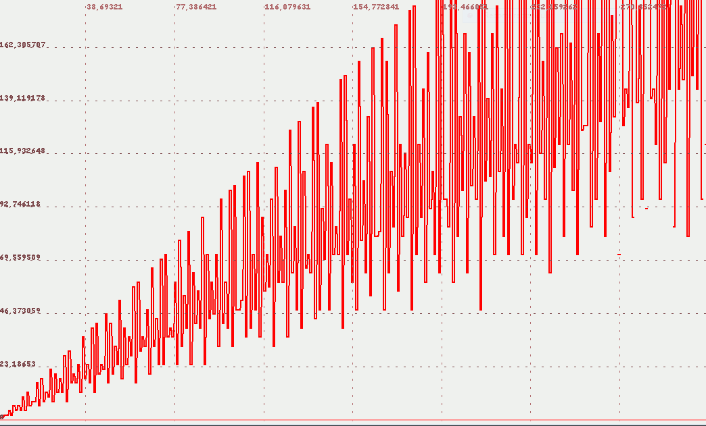

Descripción
Función Indicatriz de Euler φhttps://es.wikipedia.org/wiki/Funci%C3%B3n_%CF%86_de_Euler
Cadena de entrada
euler
Cadena de salida
φ
Uso
euler(<natural>)
Ejemplos
euler(100)
RealDoble: 40
euler(7)
RealDoble: 6
sucesion([n,euler(n)],n,1,50)
VectorEvaluado: | 1 1 | | 2 1 | | 3 2 | | 4 2 | | 5 4 | | 6 2 | | 7 6 | | 8 4 | | 9 6 | | 10 4 | | 11 10 | | 12 4 | | 13 12 | | 14 6 | | 15 8 | | 16 8 | | 17 16 | | 18 6 | | 19 18 | | 20 8 | | 21 12 | | 22 10 | | 23 22 | | 24 8 | | 25 20 | | 26 12 | | 27 18 | | 28 12 | | 29 28 | | 30 8 | | 31 30 | | 32 16 | | 33 20 | | 34 16 | | 35 24 | | 36 12 | | 37 36 | | 38 18 | | 39 24 | | 40 16 | | 41 40 | | 42 12 | | 43 42 | | 44 20 | | 45 24 | | 46 22 | | 47 46 | | 48 16 | | 49 42 | | 50 20 |
euler(x)
Salida JGE: 